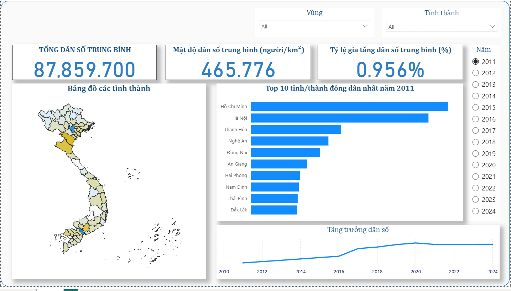

1 / 3

Đồ án tốt nghiệp: Dự đoán Dân số & Lực lượng Lao động Việt Nam
Xây dựng mô hình học máy phân tích, dự báo dân số và lực lượng lao động Việt Nam theo thời gian, phục vụ tham khảo cho hoạch định chính sách.
Chi tiết đồ án Vai trò: Thực hiện độc lập · Trường ĐH Nguyễn Tất Thành
Bài toán: Dự báo dân số và lực lượng lao động Việt Nam dựa trên dữ liệu thống kê theo thời gian, so sánh hiệu quả giữa 3 phương pháp học máy.
Business Understanding→
Data Cleaning→
EDA→
Feature Engineering→
Model→
Evaluation→
Dashboard
Công nghệ: Python, Pandas, NumPy, Scikit-learn, Power BI, SQL.
Đánh giá mô hình: So sánh Linear Regression, Random Forest và LSTM dựa trên sai số dự báo (MAE, RMSE) và khả năng diễn giải kết quả cho người hoạch định chính sách.